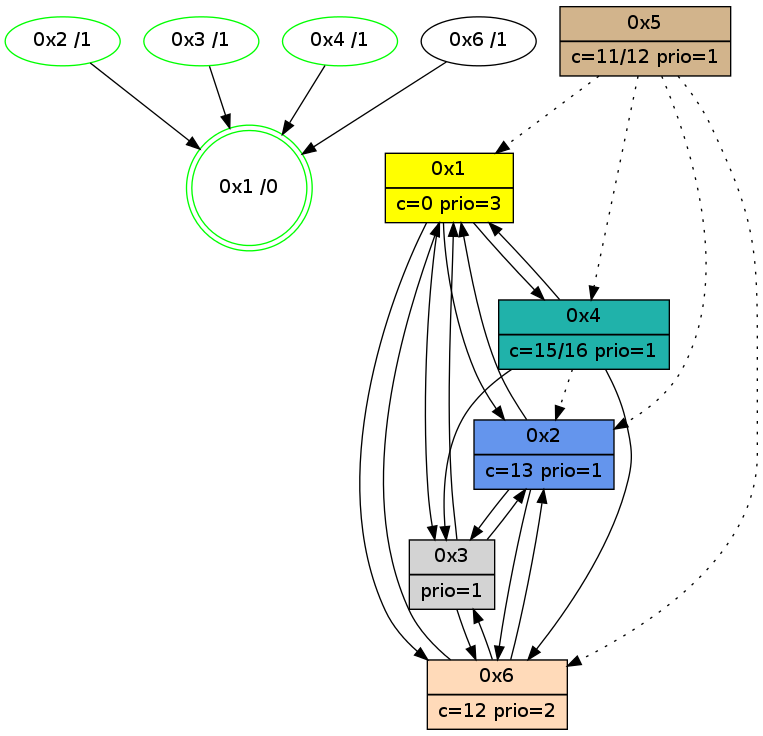

>> << IDX [start] -100 -25 -5 +0 +5 +25 +100 [1100.01145506]
 Previous packets
----------------------------------------------------------------------
1095.090371 beacon01(adaf) #0 coord=01,02,05,03,04,06 cycle=432.0ms assoc
-- color-indic=1 64 d7 f7
1095.100332 beacon02(adaf) #0 coord=01,02,05,03,04,06 cycle=432.0ms assoc 64 86 08
1095.110333 beacon05(adaf) #0 coord=01,02,05,03,04,06 cycle=432.0ms assoc 64 20 22
1095.120333 beacon03(adaf) #0 coord=01,02,05,03,04,06 cycle=432.0ms assoc 64 bc 06
1095.130334 beacon04(adaf) #0 coord=01,02,05,03,04,06 cycle=432.0ms assoc 64 1a 2c
1095.140334 beacon06(adaf) #0 coord=01,02,05,03,04,06 cycle=432.0ms assoc 64 6e 30
1095.152032 [Hello(6): seq=815 sym=4,2,1,3 sysInfo=hasWarning stat=4:0,11,8,2/2:11,14,5,0/1:5,7,2,0/3:8,0,0,11]
1095.155739 [Hello(2): seq=1388 sym=3,6,1 sysInfo=hasWarning stat=3:5,4,8,1/6:5,0,3,0/1:7,6,8,0]
1095.158253 [Hello(4): seq=902 sym=2,1,6,3 sysInfo=hasWarning stat=2:0,3,0,0/1:2,3,8,0/6:14,4,11,6/3:8,15,0,3]
1095.161380 [Color(4) seq=183 @0:0 color=15/16 prio=1 c=0,7,c;1,4,6,8,9,b,d,e]
----------------------------------------------------------------------
1095.582478 beacon01(adaf) #0 coord=01,02,05,03,04,06 cycle=432.0ms assoc
-- color-indic=1 64 9b 47
1095.592441 beacon02(adaf) #0 coord=01,02,05,03,04,06 cycle=432.0ms assoc 64 ca b8
1095.602440 beacon05(adaf) #0 coord=01,02,05,03,04,06 cycle=432.0ms assoc 64 6c 92
1095.612440 beacon03(adaf) #0 coord=01,02,05,03,04,06 cycle=432.0ms assoc 64 f0 b6
1095.622440 beacon04(adaf) #0 coord=01,02,05,03,04,06 cycle=432.0ms assoc 64 56 9c
1095.632441 beacon06(adaf) #0 coord=01,02,05,03,04,06 cycle=432.0ms assoc 64 22 80
1095.644223 [Hello(3): seq=901 sym=6,2,1 sysInfo=hasWarning stat=6:0,2,6,4/2:1,10,3,0/1:6,8,3,1]
1095.646619 [Hello(1): seq=803 sym=2,4,6,3 sym= sysInfo=hasWarning,coloring-mode-on,ColoringModeRequestCalled stat=]
1095.649452 [Color(1) seq=329 @0:0 color=0 prio=3 c=c,d,f;7,e]
1095.652144 [Color(2) seq=287 @0:0 color=13 prio=1 c=0,7,c,e,f;1,4,6,8,9,b]
----------------------------------------------------------------------
1096.074586 beacon01(adaf) #0 coord=01,02,05,03,04,06 cycle=432.0ms assoc
-- color-indic=1 64 5f 28
1096.084547 beacon02(adaf) #0 coord=01,02,05,03,04,06 cycle=432.0ms assoc 64 0e d7
1096.094548 beacon05(adaf) #0 coord=01,02,05,03,04,06 cycle=432.0ms assoc 64 a8 fd
1096.104547 beacon03(adaf) #0 coord=01,02,05,03,04,06 cycle=432.0ms assoc 64 34 d9
1096.114548 beacon04(adaf) #0 coord=01,02,05,03,04,06 cycle=432.0ms assoc 64 92 f3
1096.124548 beacon06(adaf) #0 coord=01,02,05,03,04,06 cycle=432.0ms assoc 64 e6 ef
1096.136282 [Hello(2): seq=1389 sym=3,6,1 sysInfo=hasWarning stat=3:6,5,8,1/6:5,0,3,0/1:7,6,8,0]
1096.140757 [Hello(4): seq=903 sym=2,1,6,3 sysInfo=hasWarning stat=2:0,4,0,0/1:3,4,8,0/6:14,4,11,6/3:9,15,0,3]
1096.144521 [Color(4) seq=184 @0:0 color=15/16 prio=1 c=0,7,c;1,4,6,8,9,b,d,e]
----------------------------------------------------------------------
1096.566695 beacon01(adaf) #0 coord=01,02,05,03,04,06 cycle=432.0ms assoc
-- color-indic=1 64 27 85
1096.576657 beacon02(adaf) #0 coord=01,02,05,03,04,06 cycle=432.0ms assoc 64 76 7a
1096.586658 beacon05(adaf) #0 coord=01,02,05,03,04,06 cycle=432.0ms assoc 64 d0 50
1096.596656 beacon03(adaf) #0 coord=01,02,05,03,04,06 cycle=432.0ms assoc 64 4c 74
1096.606656 beacon04(adaf) #0 coord=01,02,05,03,04,06 cycle=432.0ms assoc 64 ea 5e
1096.616658 beacon06(adaf) #0 coord=01,02,05,03,04,06 cycle=432.0ms assoc 64 9e 42
1096.628389 [Hello(3): seq=902 sym=6,2,1 sysInfo=hasWarning stat=6:0,2,6,4/2:1,11,3,0/1:7,9,3,1]
1096.630296 [Hello(1): seq=804 sym=2,4,6,3 sysInfo=hasWarning,coloring-mode-on,ColoringModeRequestCalled stat=2:11,13,8,0/4:3,13,6,2/6:3,0,1,0/3:5,3,4,1]
1096.632484 [STC(1) #0.186 new-neigh,tree-change,inconsistent-stability,stable,to-color d=0]
1096.634103 [Color(1) seq=330 @0:0 color=0 prio=3 c=c,d,f;7,e]
1096.636321 [Color(2) seq=288 @0:0 color=13 prio=1 c=0,7,c,e,f;1,4,6,8,9,b]
----------------------------------------------------------------------
1097.058805 beacon01(adaf) #0 coord=01,02,05,03,04,06 cycle=432.0ms assoc
-- color-indic=1 64 e3 ea
1097.068765 beacon02(adaf) #0 coord=01,02,05,03,04,06 cycle=432.0ms assoc 64 b2 15
1097.078765 beacon05(adaf) #0 coord=01,02,05,03,04,06 cycle=432.0ms assoc 64 14 3f
1097.088766 beacon03(adaf) #0 coord=01,02,05,03,04,06 cycle=432.0ms assoc 64 88 1b
1097.098766 beacon04(adaf) #0 coord=01,02,05,03,04,06 cycle=432.0ms assoc 64 2e 31
1097.108767 beacon06(adaf) #0 coord=01,02,05,03,04,06 cycle=432.0ms assoc 64 5a 2d
1097.120500 [Hello(2): seq=1390 sym=3,6,1 sysInfo=hasWarning stat=3:7,6,8,1/6:5,0,3,0/1:7,6,8,0]
1097.123043 [Hello(4): seq=904 sym=1,6,3 sysInfo=hasWarning stat=1:4,5,9,0/6:14,4,11,6/3:10,15,0,3]
1097.125641 [Color(3) seq=199 @0:0 prio=1 c=0,d,f;7,c,e]
1097.127781 [STC(4)->1 #0.186 new-neigh,tree-change,inconsistent-stability,stable,to-color d=1]
1097.129709 [Hello(6): seq=817 sym=2,1,3 sysInfo=hasWarning stat=2:12,0,5,0/1:7,9,3,0/3:10,2,0,11]
1097.132425 [STC(6)->1 #0.186 new-neigh,tree-change,inconsistent-stability,to-color d=1]
1097.139622 [Color(4) seq=185 @0:0 color=15/16 prio=1 c=0,7,c;1,4,6,8,9,b,d,e]
----------------------------------------------------------------------
1097.550913 beacon01(adaf) #0 coord=01,02,05,03,04,06 cycle=432.0ms assoc
-- color-indic=1 64 af 5a
1097.560873 beacon02(adaf) #0 coord=01,02,05,03,04,06 cycle=432.0ms assoc 64 fe a5
1097.570874 beacon05(adaf) #0 coord=01,02,05,03,04,06 cycle=432.0ms assoc 64 58 8f
1097.580873 beacon03(adaf) #0 coord=01,02,05,03,04,06 cycle=432.0ms assoc 64 c4 ab
1097.590875 beacon04(adaf) #0 coord=01,02,05,03,04,06 cycle=432.0ms assoc 64 62 81
1097.600874 beacon06(adaf) #0 coord=01,02,05,03,04,06 cycle=432.0ms assoc 64 16 9d
1097.612610 [Hello(3): seq=903 sym=6,2,1 asym= sysInfo=hasWarning stat=6:1,2,7,4/2:2,12,3,0/1:8,10,4,1]
1097.615061 [Hello(1): seq=805 sym=2,4,6,3 sysInfo=hasWarning,coloring-mode-on,ColoringModeRequestCalled stat=2:12,14,8,0/4:4,14,7,2/6:4,0,2,0/3:6,4,4,1]
1097.617894 [Color(1) seq=331 @0:0 color=0 prio=3 c=c,d,f;7,e]
1097.620528 [Color(2) seq=289 @0:0 color=13 prio=1 c=0,7,c,e,f;1,4,6,8,9,b]
----------------------------------------------------------------------
1098.043022 beacon01(adaf) #0 coord=01,02,05,03,04,06 cycle=432.0ms assoc
-- color-indic=1 64 6b 35
1098.052983 beacon02(adaf) #0 coord=01,02,05,03,04,06 cycle=432.0ms assoc 64 3a ca
1098.062985 beacon05(adaf) #0 coord=01,02,05,03,04,06 cycle=432.0ms assoc 64 9c e0
1098.072986 beacon03(adaf) #0 coord=01,02,05,03,04,06 cycle=432.0ms assoc 64 00 c4
1098.082983 beacon04(adaf) #0 coord=01,02,05,03,04,06 cycle=432.0ms assoc 64 a6 ee
1098.092985 beacon06(adaf) #0 coord=01,02,05,03,04,06 cycle=432.0ms assoc 64 d2 f2
1098.104710 [Hello(2): seq=1391 sym=3,6,1 sysInfo=hasWarning stat=3:8,7,8,1/6:6,0,4,0/1:7,6,8,0]
1098.109202 [Hello(4): seq=905 sym=1,6,3 asym=2 sysInfo=hasWarning stat=1:5,6,9,0/6:14,4,11,6/3:11,15,0,3/2:0,1,0,0]
1098.113067 [Color(4) seq=186 @0:0 color=15/16 prio=1 c=0,7,c;1,4,6,8,9,b,d,e]
----------------------------------------------------------------------
1098.535129 beacon01(adaf) #0 coord=01,02,05,03,04,06 cycle=432.0ms assoc
-- color-indic=1 64 26 32
1098.545090 beacon02(adaf) #0 coord=01,02,05,03,04,06 cycle=432.0ms assoc 64 77 cd
1098.555091 beacon05(adaf) #0 coord=01,02,05,03,04,06 cycle=432.0ms assoc 64 d1 e7
1098.565091 beacon03(adaf) #0 coord=01,02,05,03,04,06 cycle=432.0ms assoc 64 4d c3
1098.575091 beacon04(adaf) #0 coord=01,02,05,03,04,06 cycle=432.0ms assoc 64 eb e9
1098.585092 beacon06(adaf) #0 coord=01,02,05,03,04,06 cycle=432.0ms assoc 64 9f f5
1098.596812 [Hello(3): seq=904 sym=6,2,1 sysInfo=hasWarning stat=6:1,2,7,4/2:2,13,3,0/1:9,11,4,1]
1098.598639 [Hello(1): seq=806 sym=2,4,6,3 sysInfo=hasWarning,coloring-mode-on,ColoringModeRequestCalled stat=2:13,15,8,0/4:4,15,7,2/6:4,0,2,0/3:6,5,4,1]
1098.601438 [Color(1) seq=332 @0:0 color=0 prio=3 c=c,d,f;7,e]
1098.603010 [Color(2) seq=290 @0:0 color=13 prio=1 c=0,7,c,e,f;1,4,6,8,9,b]
----------------------------------------------------------------------
1099.027237 beacon01(adaf) #0 coord=01,02,05,03,04,06 cycle=432.0ms assoc
-- color-indic=1 64 e2 5d
1099.037198 beacon02(adaf) #0 coord=01,02,05,03,04,06 cycle=432.0ms assoc 64 b3 a2
1099.047197 beacon05(adaf) #0 coord=01,02,05,03,04,06 cycle=432.0ms assoc 64 15 88
1099.057199 beacon03(adaf) #0 coord=01,02,05,03,04,06 cycle=432.0ms assoc 64 89 ac
1099.067199 beacon04(adaf) #0 coord=01,02,05,03,04,06 cycle=432.0ms assoc 64 2f 86
1099.077200 beacon06(adaf) #0 coord=01,02,05,03,04,06 cycle=432.0ms assoc 64 5b 9a
1099.087941 [STC(1) #0.187 new-neigh,tree-change,inconsistent-stability,stable,to-color d=0]
1099.092546 [Hello(6): seq=819 sym=2,1,3 sysInfo=hasWarning stat=2:12,2,5,0/1:9,11,3,0/3:12,3,0,11]
1099.094867 [Color(4) seq=187 @0:0 color=15/16 prio=1 c=0,7,c;1,4,6,8,9,b,d,e]
----------------------------------------------------------------------
1099.519345 beacon01(adaf) #0 coord=01,02,05,03,04,06 cycle=432.0ms assoc
-- color-indic=1 64 ae ed
1099.529305 beacon02(adaf) #0 coord=01,02,05,03,04,06 cycle=432.0ms assoc 64 ff 12
1099.539308 beacon05(adaf) #0 coord=01,02,05,03,04,06 cycle=432.0ms assoc 64 59 38
1099.549306 beacon03(adaf) #0 coord=01,02,05,03,04,06 cycle=432.0ms assoc 64 c5 1c
1099.559306 beacon04(adaf) #0 coord=01,02,05,03,04,06 cycle=432.0ms assoc 64 63 36
1099.569308 beacon06(adaf) #0 coord=01,02,05,03,04,06 cycle=432.0ms assoc 64 17 2a
1099.580911 [STC(4)->1 #0.187 new-neigh,tree-change,inconsistent-stability,stable,to-color d=1]
1099.583004 [STC(2)->1 #0.187 new-neigh,tree-change,inconsistent-stability,stable,to-color d=1]
1099.584958 [Hello(3): seq=905 sym=6,2,1 sysInfo=hasWarning stat=6:2,2,7,4/2:2,14,3,0/1:10,12,5,1]
1099.587334 [TreeStatus(2)-.->1 #0.187 new-neigh,tree-change,inconsistent-stability,stable child=1]
1099.588598 [STC(3)->1 #0.187 new-neigh,tree-change,inconsistent-stability,stable,to-color d=1]
1099.590586 [Color(2) seq=291 @0:0 color=13 prio=1 c=0,7,c,e,f;1,4,6,8,9,b]
1099.594456 [Hello(1): seq=807 sym=2,4,6,3 sysInfo=hasWarning,coloring-mode-on,ColoringModeRequestCalled stat=2:14,0,8,0/4:4,0,7,2/6:5,0,2,0/3:6,5,4,1]
1099.597920 [Color(1) seq=333 @0:0 color=0 prio=3 c=c,d,f;7,e]